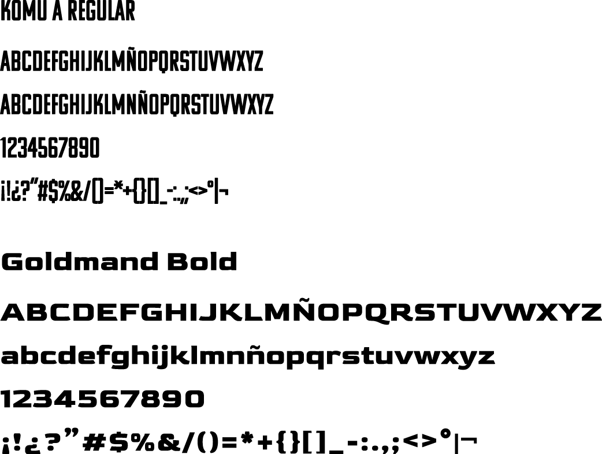
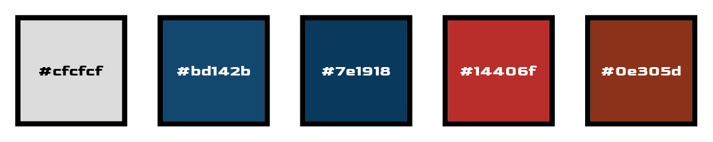

Micrositio - Memoria
Tipografía
Para el sitio web se utilizaron, en su totalidad, 2 tipografías. Una fue utilizada únicamente para el logotipo; la otra fue usada para el todo el resto del sitio.
Paleta cromática
La paleta cromática fue inspirada íntegramente en los trajes, tan característicos y representativos, del Capitán América y de Iron Man.
Morfología
Para el sitio web se utilizó un formato uniforme en todas sus partes, cabeceras, áreas de contenidos y pie de página. Las imágenes utilizadas hacen parte siempre o de escenas de la película o de posters promocionales. La estructura en general es cuadrada, sin bordes redondeados, ya que se busca usar de referencia el concepto de rayas y estrellas, siempre presente en la cultura estadounidense, más aún en la época en la que Steve vivía, caracterizada ciertamente de cortes y ángulos rectos.